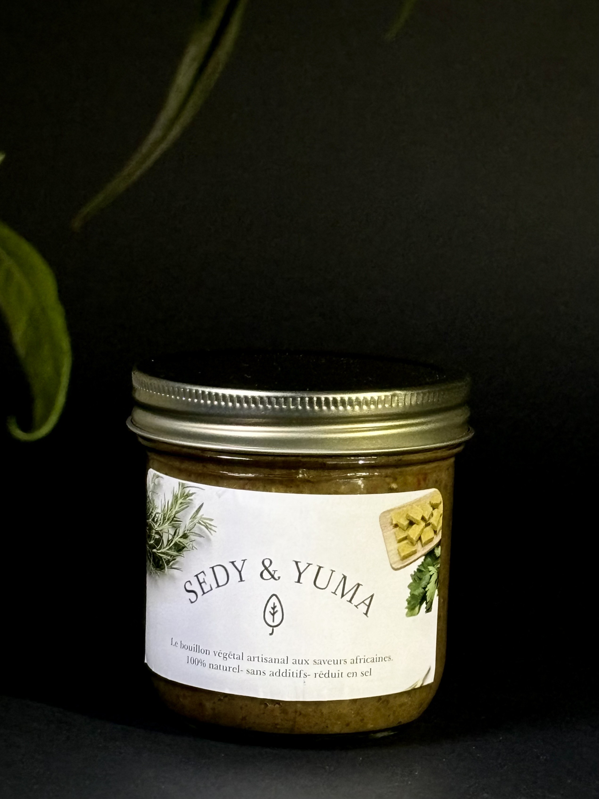

Sedy & Yuma est un bouillon d’assaisonnement végétal aux saveurs africaines.
Inspiré des traditions culinaires, il est conçu à base de légumes, d’herbes aromatiques, d’épices africaines 100 % naturel. Il est pensé pour offrir une alternative saine et savoureuse aux cubes industriels souvent trop salés et riches en additifs.
C’est le plaisir de renouer avec les bonnes saveurs de nos grand-mères dans vos préparations du quotidien : sauces, soupes, marinades ...pour les relever de manière naturelle et authentique, sans excès de sel ni exhausteurs de goût, tout en respectant votre santé et l'environnement.